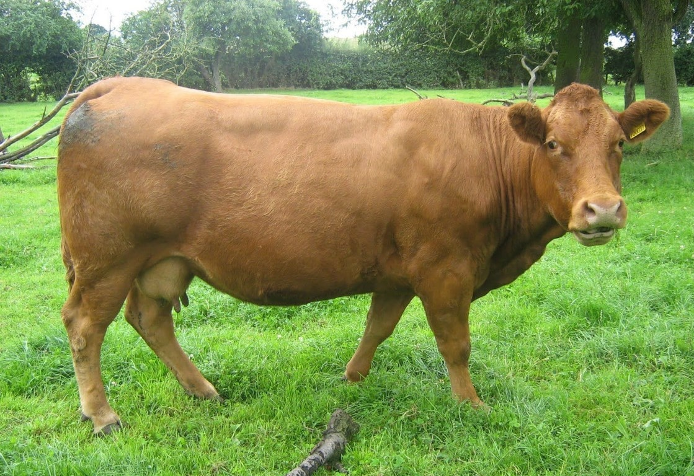
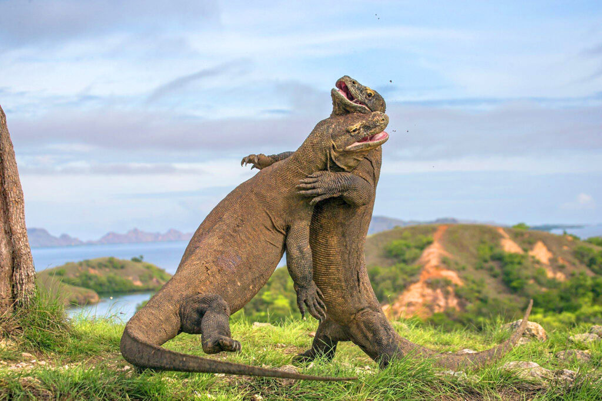
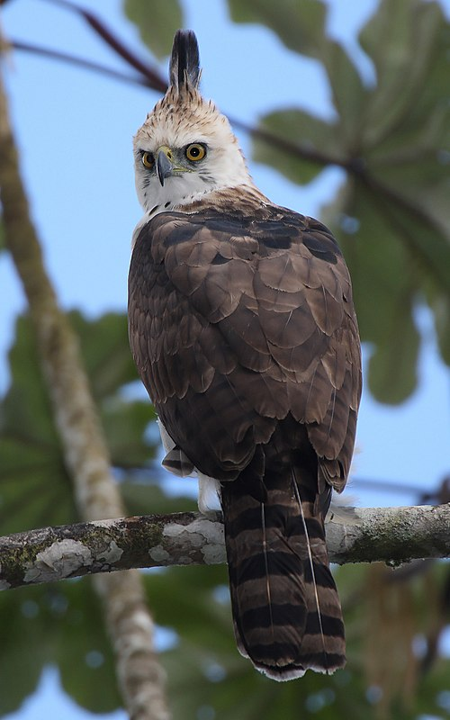

Selamat Datang di Faunapedia!
Fauna adalah istilah untuk menyebut semua jenis hewan yang hidup di suatu wilayah atau habitat tertentu. Fauna bisa mencakup hewan-hewan besar seperti gajah dan singa, sampai hewan kecil seperti semut dan kupu-kupu. Setiap tempat di bumi punya fauna yang berbeda-beda, tergantung pada iklim, lingkungan, dan kondisi geografisnya. Misalnya, Indonesia punya fauna tropis seperti orang utan dan komodo, sementara Kutub Utara punya fauna dingin seperti beruang kutub dan anjing laut.
Hewan Populer


